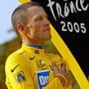
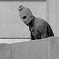
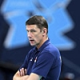
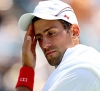
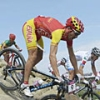
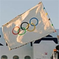

Versión Clásica
Secciones
Buscar
AMÉRICA
ESPAÑA
España
Madrid
Andalucia
Sevilla
M·laga
Baleares
Barcelona
Castilla y LeÛn
Valladolid
Valencia
Alicante
Castellón
Pais Vasco
MUNDO
EUROPA
OP-BLOGS
CIENCIA
Ciencia
Natura
NanotecnologÌa
DEPORTES
Deportes
F˙tbol
Liga BBVA
Champions
Eurocopa 2012
Juegos Olímpicos 2012
Motor
Baloncesto
Tenis
Ciclismo
M·s deporte
SALUD
Salud
C·ncer
Sida y hepatitis
Neurociencia
Mujer
Biociencia
CorazÛn y diabetes
NutriciÛn
CÛdigo de salud
Piel sana
Salud sexual
ECONOMÕA
CULTURA
Cultura
Novela negra
CÛmic
Toros
VIVIENDA
TECNOLOGÕA
MEDIOS
TV
MULTIMEDIA
Gentes!
√öltimas
Vídeos
SOLIDARIDAD
YODONA
JJOO Londres 2012
Actualizado el
01/11/2012
a las
19:00h.
ELMUNDO.es

CICLISMO
Dopaje
El CIO investiga el bronce olímpico de Armstrong
F⁄TBOL
Juegos Olímpicos
El fútbol inglés no quiere ser británico en Río 2016
M¡S DEPORTE
Olimpismo
La última borrachera olímpica
M¡S DEPORTE
Sincronizada
La Federación de Natación prescinde de Anna Tarrés
M⁄NICH' 72
24 horas de terror
La masacre, hora a hora
JJOO
Los protagonistas
Cinco aros, los cinco 'Greatest' de Londres 2012

MUNICH '72
El jefe del Mosad
'No hicieron el mínimo esfuerzo por salvar vidas'

VOLEIBOL
Sergei Ovchinnikov
Se suicida el seleccionador ruso de voleibol femenino

TENIS
Londres 2012
Djokovic y el serrucho
BALONCESTO
Piensa ir a Rio'2016
LeBron, de nuevo profeta en su tierra
BLOG
El mirador olímpico
'El oro sigue siendo para Barcelona'
JJOO
Balance
Atletismo, tenis y fútbol, la cruz de España
JJOO
El balance
Pocas deportistas, enormes éxitos
ATLETISMO
RFEA
Odriozola: 'Cuento con el apoyo de Alejandro Blanco'
BALONMANO
Críticas en Francia
Destrozar un plató tras ganar el oro
JJOO
Atletismo
El abanderado de Eritrea pide asilo político al Reino Unido

MOUNTAIN BIKE
Cuarto
Hermida se queda en la puerta
JJOO
Balance local
De un oro a 29: la increíble progresión británica
JJOO
Balance
Blanco califica de 'espectacular' la actuación española

JJOO
Ser√° la sede en 2016
Río enciende la mecha
Noticias anteriores
1
2
3
4
Noticias siguientes
M√°s noticias
SECCIONES
España